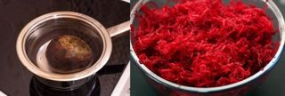
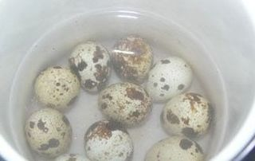
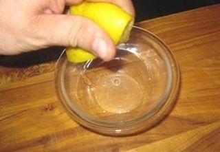
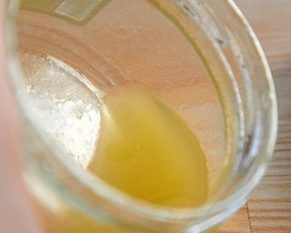

Шаг 1: Отвариваем свёклу.

Первым делом нам нужно налить небольшое количество воды в кастрюльку и опустить туда промытую проточной водой свёклу. Ставим кастрюлю на плиту и включаем огонь на средний уровень горения. Свёклу нужно отваривать до готовности. Молодая свёкла отварится минут за 40. Чтобы вода поскорее закипела, добавьте в неё немного соли.
Готовую свёклу нужно предварительно остудить, очистить от кожуры и натереть на крупной тёрке.
Шаг 2: Подготавливаем ингредиенты.

Тем временем, или можно позднее, когда свёкла будет на подходе, наливаем воды теперь уже в мисочку и опускаем туда нужное количество перепелиных яиц. Варим их до готовности в течение 6 минут. Затем очищаем яйца от скорлупы, и разрезаем каждое яйцо пополам. Временно откладываем готовые яйца в тарелку.

Лимон промываем тщательно проточной водой и трём жёстким скребком для посуды. Это необходимо для того, чтобы удалить возможное восковое покрытие, которое часто наносят в магазинах для лучшего блеска фруктов. Режем лимон пополам, и из половинки выдавливаем сок в стакан или другую ёмкость.
Зелень промываем, а затем встряхиваем, чтобы удалить излишек воды. Измельчаем зелень острым ножом на разделочной доске.
И чуть не забыла - откройте банку с зелёным горошком и слейте из неё водичку.
Шаг 3: Готовим заправку для салата из морской капусты с перепелиными яйцами.

Ничего сверхъестественного - смешиваем в глубокой тарелке оливковое масло и лимонный сок, а затем слегка взбиваем соус вилкой или венчиком. Вместо оливкового масла можно использовать подсолнечное, однако первое намного полезнее.
По желанию, в соус-заправку можно добавить немного соли и специй. Однако учтите, что морская капуста солёная сама по себе